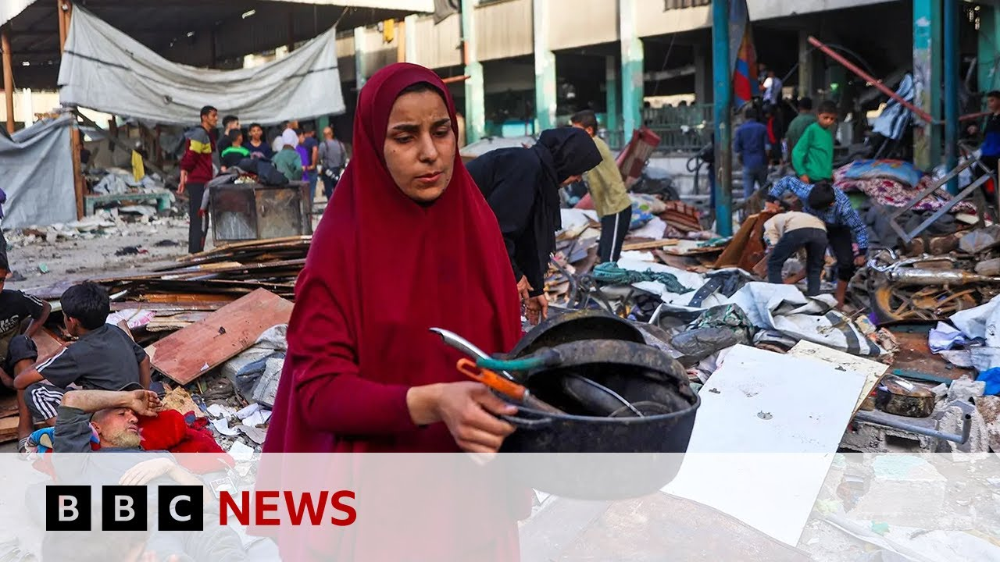

【欧盟称以色列对加沙的打击“超出了打击哈马斯所需的必要范围” | BBC新闻】
Summary: The EU's top diplomat criticizes Israel's military actions in Gaza as excessive and condemns the new aid distribution system bypassing the UN, while the UN warns of famine and despair among Gazans. Hostage families in Israel protest the prolonged war, and an aid worker describes catastrophic conditions in Gaza.
摘要： 欧盟最高外交官批评以色列在加沙的军事行动过度，并谴责绕过联合国的新援助分配系统，同时联合国警告加沙面临饥荒和绝望。以色列人质家属抗议战争拖延，援助工作者描述加沙的灾难性状况。

⏱️ Estimated Reading Time: 11 min
Let's turn back to the Middle East now.
现在让我们回到中东局势。
And the EU's top diplomat, Kaia Kala, says Israel's military strikes on Gaza go beyond what is necessary to defeat Hamas.
欧盟最高外交官卡亚·卡拉表示，以色列对加沙的军事打击超出了击败哈马斯所需的必要范围。
She's also criticized the new aid distribution system imposed by Israel in Gaza, which bypasses the United Nations.
她还批评了以色列在加沙实施的新援助分配系统，该系统绕过了联合国。
Let me just actually quickly take you back to the UN because the Security Council has been meeting and is meeting to discuss the situation in Gaza.
实际上，让我快速带您回到联合国，因为安理会正在开会讨论加沙局势。
We've been hearing some of the key contributions in the last hour or so and we'll return there in the next few minutes to get the latest live.
过去一小时左右我们听到了一些关键发言，几分钟后我们将返回那里获取最新现场消息。
But uh I also want to just play you a little more of what Kaiakalas has been saying today.
但我也想再播放一些卡亚卡拉今天的讲话。
Israel strike uh strikes uh in Gaza go beyond um what is necessary to fight Hamas.
以色列在加沙的打击超出了打击哈马斯所需的必要范围。
Humanitarian aid cannot be uh weaponized.
人道主义援助不能被武器化。
It has to be in accordance with the humanitarian uh principles and therefore we have the humanitarian aid organizations that are able to uh provide that aid.
它必须符合人道主义原则，因此我们需要有能力提供援助的人道主义组织。
Well, that UN session started with Cigrid Kag who is the UN special coordinator for the Middle East peace process talking and introducing today's session.
联合国会议由中东和平进程特别协调员西格丽德·卡格发言并介绍今天的会议。
Uh she said the entire population of Gaza is facing the risk of famine.
她说加沙全体民众面临饥荒风险。
Civilians in Gaza have lost hope, Mr. President.
加沙的平民已失去希望，主席先生。
Instead of saying goodbye, see you tomorrow, Palestinians now say see you in heaven.
巴勒斯坦人现在不说“再见，明天见”，而是说“天堂见”。
Death is their companion.
死亡是他们的伴侣。
It's not life.
这不是生活。
It is not hope.
这不是希望。
Palestinians in Gaza deserve more than survival.
加沙的巴勒斯坦人不应仅仅生存。
They deserve a viable and vibrant future.
他们应拥有可行且充满活力的未来。
Well, we'll return to the Security Council in the next few minutes, but let's speak now to our correspondent, Barbara P Usher, who's in Jerusalem for us.
几分钟后我们将回到安理会，但现在让我们连线在耶路撒冷的记者芭芭拉·P·厄舍。
And uh Barbara, I hope you can hear me.
芭芭拉，希望你能听到我。
Okay.
好的。
But people there are marking the 600th day of this war in Gaza.
那里的人们正在纪念加沙战争的第600天。
Give me an idea of the sorts of things that they have been saying to you.
告诉我他们对你说了些什么。
Yes, Matthew.
好的，马修。
I'm actually in central Tel Aviv uh with in Hostage Square, a place from where we've reported many times.
我实际上在特拉维夫市中心的人质广场，我们曾多次从这里报道。
So, I think it's familiar to viewers.
所以观众应该很熟悉这里。
This is a place that became a central gathering point for the families and friends of hostages shortly after the war began.
这里是战争开始后不久人质亲友的集中聚集地。
And I don't think anyone expected they would still be here 600 days later.
没人想到600天后他们仍在这里。
You can see the countdown there.
你可以看到那里的倒计时。
599 leading up to 600 days.
599天即将达到600天。
They are very frustrated.
他们非常沮丧。
They are very angry.
他们非常愤怒。
Many of them very angry with the prime minister Benjamin Netanyahu who they believe ended the ceasefire in March and resumed the war because of political reasons because of pressure from his hardline cabinet uh partners and they're very afraid uh that these air strikes that have been killing Palestinians will kill their loved ones the ones that are still there.
许多人非常愤怒总理本雅明·内塔尼亚胡，他们认为他因政治原因和强硬派内阁伙伴的压力在三月结束停火并重启战争，他们非常害怕这些杀害巴勒斯坦人的空袭会杀死他们仍在那里的亲人。
So quite a lot of criticism of the prime minister.
所以对总理有很多批评。
Also appeals to President Trump uh because the Americans have ended up uh negotiating directly with Hamas to get an American hostage freed.
还呼吁特朗普总统，因为美国人最终直接与哈马斯谈判以释放一名美国人质。
And so they're saying, "Mr. Trump, please take the lead here and get all the rest of the hostages back."
所以他们说：“特朗普先生，请带头把其余人质带回来。”
So very much uh a sense of frustration at this 600 day mark.
所以在600天这个节点上非常沮丧。
And they have been Matthew the sharp end of the spear for protests against the war.
马修，他们一直是反战抗议的最前线。
But polls show that a majority of Israelis want the war to end and the hostages to come back.
但民调显示大多数以色列人希望战争结束和人质返回。
you have had uh in recent days and weeks much sharper criticism.
最近几天和几周批评更加尖锐。
So the former prime minister Omar who has been critical of Israel's tactics uh in Gaza, the humanitarian crisis, the deaths, the civilian deaths, um has now actually said he believes that they are war crimes.
前总理奥马尔一直批评以色列在加沙的战术、人道主义危机、死亡和平民死亡，现在实际上表示他认为这些是战争罪。
Uh that is still very much a minority view in Israel.
这在以色列仍是少数观点。
But it does show you how the uh the war having gone on for so long and then also having resumed so recently in the middle of a ceasefire has frustrated and angered many Israelis.
但这确实显示战争持续如此之久，又在停火期间最近重启，让许多以色列人感到沮丧和愤怒。
Barbara there in Hos Square.
芭芭拉在人质广场。
Thanks very much.
非常感谢。
More from Barbara Pasha a little later in the program.
稍后节目会有更多芭芭拉·帕夏的报道。
But let's speak live now to Yeshua Abu Sharek who's an aid worker for International Network for aid relief and assistance in Gaza City.
但现在让我们现场连线加沙城国际援助救济网络的工作人员耶书亚·阿布·沙雷克。
And thank you for being here with us.
感谢您加入我们。
give me an idea of what the situation is like where you are currently.
告诉我您目前所在地的情况。
Yeah, thank you for having me.
好的，感谢邀请。
The situation in Gaza Strip is devastating and getting worse and worse after almost 12 weeks of complete blockade.
加沙地带的情况非常糟糕，在近12周的完全封锁后越来越糟。
Even with the very few amount of trucks that entered Gaza Strip recently, it's it's not enough.
即使最近有少量卡车进入加沙地带，也远远不够。
It didn't reach the people at household level or family level.
没有到达家庭层面。
So people in Gaza Strip, two million people are starving, living at risk of famine and uh they ran out to all CO mechanism and yet they have to face the mass uh the forced mass displacement and evacuation uh in addition to uh the intensifying uh air strikes all over Gaza Strip.
所以加沙地带的200万人正在挨饿，面临饥荒风险，耗尽了所有应对机制，还要面对大规模强制流离失所和疏散，以及加沙各地加剧的空袭。
So people are uh fleeing uh and and wandering the streets with no access to shelter items, with no access to food, with no access to hygiene.
所以人们在逃离并在街头流浪，无法获得庇护所物品、食物和卫生设施。
Most organiz almost all organization humanitarian organizations in Gaza Strip run out or have zero stock of humanitarian aids.
加沙地带几乎所有援助组织的人道主义援助都已耗尽或库存为零。
So the situation in Gaza Strip is catastrophic.
所以加沙地带的情况是灾难性的。
We were just listening to the UN special coordinator for the Middle East peace process talking at the UN Security Council and she said and just recounted some of the conversations she'd heard that instead of saying see you tomorrow, Garsens are saying see you in heaven and she said a phrase death is their companion.
我们刚听到联合国中东和平进程特别协调员在安理会的讲话，她复述了一些对话，加沙人不说“明天见”而是说“天堂见”，她说“死亡是他们的伴侣”。
Is that the sort of thing that you are hearing from people when you talk to people?
这是你与人们交谈时听到的话吗？
Yes, it's it's all it's all over around everyone.
是的，所有人都在说这些。
uh all kind of fears, all kind of uh killing like some people who especially children uh as uh analysis showed uh more than 71,000 children are are having acute malnutrition.
各种恐惧，各种杀戮，比如分析显示超过71000名儿童患有急性营养不良。
So the with this uh starvation with this uh very limited access to uh very limited items of food they are starving to death.
所以由于饥饿和极有限的食物获取，他们正在饿死。
uh in addition to air strikes everywhere for example uh me myself as a humanitarian aid workers for during the last uh recent um month I uh escaped from here and there like three times uh worrying about my children while they are at uh at yes a final question if I could and I hope the line will restore because it looks like it might have frozen no it's come back we know of the new humanitarian arrangements that Israel has set up a lot of condemnation of that from the UN but are you finding that are people where you are heading south towards that aid or are they not are they staying put uh it's it's not that this mechanism is not designed to be uh reachable especially for people in Gaza and north in Gaza city and north so no the people who ran ran for uh receiving some aids or taking some aids are from Masiun Rafa which is a very southern part of Gaza strip but for north and Gaza city it's not workable it's not applicable for them to go there because it takes hours of walking or using donkey card so it's not visible it's not workable uh and the mechanism itself is not designed to uh reach people in Gazan and north.
此外还有各地的空袭，比如我自己作为人道主义工作者，在过去一个月里逃了三次，担心我的孩子们。最后一个问题，我们知道以色列设立的新人道主义安排遭到联合国谴责，但你发现人们是否向南去寻求援助，还是留在原地？这个机制本身设计上不可达，特别是对加沙城和北部的人，所以跑去接收援助的人来自加沙地带最南部的拉法，但对北部和加沙城的人来说不可行，因为需要步行数小时或使用驴车，所以不可行，机制本身也不是为加沙北部设计的。
You're sir, we have to leave it there.
先生，我们只能到此为止。